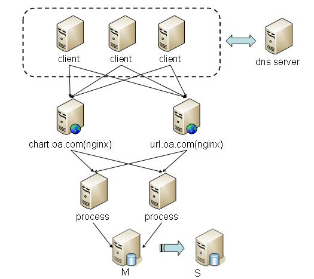

我是机器人[卡帕奇]，负责接客，有问题可以先问问我，哥不懂技术，懂一点生活懂一点爱情：
Quick Start：
这是一个简单的例子，我们在页面中嵌入了一张3D饼图：
这张图片中的数据，可能从你的业务系统DB中来，也可能从一堆日志文件临时中计算得来，也可能通过各种数据接口获取。不管怎么样，很多时候我们需要把数据通过图形方式展示出来。通过Tencent Chart Tools，我们要达到上述图片展示的效果，只要构造下面这个html片段即可：
<html> <head></head> <body> <img src="http://chart.oa.com/chart.php?cht=p3&chs=400x200&chd=t:20,80,10,23&chl=May|Jun|Jul|Aug|Sep|Oct&chtt=3D%e9%a5%bc%e5%9b%be" /> </body> </html>
而这些html片段，我们用bash脚本，还是php脚本、还是c++程序，都可以轻松生成。以php为例：
\n"; } testPie(); ?>
我们传递了描点所需的数据，画图服务就为我们生成了一副图片，很方便，很简单，这就是Tencent Chart Tools.
What is tencent chart tools?
Tencent Chart Tools是一款在线动态画图服务，用户通过url调用的方式把绘图描点所需的数据传给画图服务，就可以获取到所需图片。图片可以直接嵌入到html页面中、嵌入到邮件中、拉取到本地。
动态画图服务支持多种图片类型，可以跨平台、跨语言调用，使用方便，尤其适用于各种图文并茂的报表系统。
Why we need tencent chart tools?
google提供了Google Chart Tools，为什么我们需要Tencent Chart Tools？因为：
（1）安全性：动态画图服务都需要获取数据才能画图，公司内部有每天有大量的数据报告需要发出，为了避免敏感业务数据外泄，我们需要一款公司自主研发、运行于内部网络的动态画图服务；
（2）可靠性：运行于公网的Google chart tools，受公网网络的稳定因素影响，对构造稳定的数据服务极为不便；
（3）可用性：公司办公网络已经划分为开发网、办公网，在开发网无法访问公网服务，也无法访问google chart tools；
（4）约束性：在邮件中嵌入的图片可以由动态画图服务提供，但有url长度的约束。我们需要辅以短网址的服务，把过长数据用post中转出去。
Tencent Chart Tools提供两大服务，动态画图服务和短网址服务。
其中，动态画图服务支持如下的图片类型（您在下面所看到的图片均来自Tencent Chart Tools动态画图服务）：
(1) 饼图
(2) 3D饼图
(3) 直方图
(4) 折线图
(5) 散点图
Tencent Chart Api的封装是根据Google Chart Api来进行的，目的是为了方便之前使用Google Chart Api的业务能以最小改动完成切换。和一般的高性能网站一样，Tencent Chart Tools的服务具有高可靠性、高扩展性、易维护性等特点。
Tencent Chart Tools的基本目标用户有三种，一种是数据开发者，一种是业务运营工程师，一种是测试开发工程师。使用Tencent Chart Tools能给大家带来的好处有：
（1）开发成本更低：tencent chart tools提供了丰富的画图类型和精细的控制选项给开发者使用，不管是在bash脚本中，还是在php脚本中，还是在c++程序中，要开发图文并茂的数据报告、日报邮件，都不再需要调用复杂的图形库，尤其是bash脚本，作为许多非软件开发通道的运营工程师、测试工程师最常接触的一种脚本，要用它来发送图文并茂的邮件是非常困难的，而基于tencent chart tools，可以很轻松实现这个需求，并且开发成本可以降到最低。
（2）运维成本更低：我们把画图都基于Tencent Chart Tools来实现后，画图功能就集中在一个统一的服务上，就可以实现对动态画图服务提供专门的运营。在Tencent Chart Tools上，开发人员无需关系硬件维护、服务监控、容灾切换、设备扩容等操作，我们通过专业的运营来保证。
（3）更加安全可靠：Tencent Chart Tools是内网服务，比公网服务更加安全。基于短网址服务，将画图点阵的数据隐藏在一个hash key之中，进一步达到了信息隐藏的目的。
构成Tencent Chart Tools的两大服务，一个chart.oa.com，提供画图服务，一个url.oa.com，提供短网址服务。架构分为接入层、处理层、存储层。如下图所示：

(1) 接入层负责接入画图请求，域名都登记在公司oa的dns server上，接入层一旦出现故障，可以在TTL（3600秒）内通过域名变更，将域名切换到备用服务器。接入层安装了nginx，做http 7层反向代理，通过后端健康探测，把请求分发到后端两台process服务器上。对内网的画图服务来讲，只要数据不丢失，这个故障延时可以满足使用的需要了。
(2) 逻辑层对接入层传过来的数据进行图片生成、以及短网址的登记及提取转换处理。
(3) 存储层有两台DB组成，做了主备同步，DB存储的数据主要为短网址数据。
chart.oa.com和url.oa.com涉及到的服务器均位于西安IDC。 如果要访问这两个服务，请确保正确配置了公司OA提供的DNS Server，并自行考虑跨IDC访问的延时。
目前公司提供了4台DNS Server用于内部域名解析：
(1) 10.6.18.41
(2) 10.6.18.42
(3) 192.168.1.26
(4) 192.168.1.86